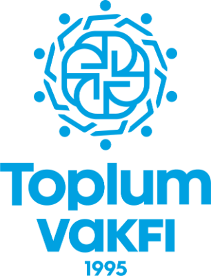

<!DOCTYPE html>
<html>
<head>
<meta charset="utf-8">
<meta name="viewport" content="width=device-width, initial-scale=1">
<script src="./support.js"></script>
</head>
<body>
<x-dc>

<helmet>
  <link rel="preconnect" href="https://fonts.googleapis.com" />
  <link rel="preconnect" href="https://fonts.gstatic.com" crossorigin />
  <link href="https://fonts.googleapis.com/css2?family=Cairo:wght@400;500;600;700;800;900&display=swap" rel="stylesheet" />
  <style>
    .tv-foot, .tv-foot * { font-family: Cairo, Arial, sans-serif; box-sizing: border-box; }
    .tv-foot { position: relative; background: linear-gradient(120deg, #021428 0%, #062a3d 55%, #011a1a 100%); color: rgba(255,255,255,.72); padding: 56px 0 0; overflow: hidden; }
    .tv-foot::before { content: ""; position: absolute; inset: 0; opacity: .1; background-image: radial-gradient(#fff 1px, transparent 1.5px); background-size: 36px 36px; pointer-events: none; }
    .tv-foot-in { position: relative; z-index: 1; width: min(1140px, calc(100% - 56px)); margin: 0 auto; }
    .tv-foot-news { display: flex; align-items: center; justify-content: space-between; gap: 30px; padding: 0 0 30px; margin-bottom: 34px; border-bottom: 1px solid rgba(255,255,255,.1); flex-wrap: wrap; }
    .tv-foot-news h3 { margin: 0 0 4px; font-size: 16px; font-weight: 800; color: #fff; }
    .tv-foot-news p { margin: 0; font-size: 12.5px; color: rgba(255,255,255,.55); }
    .tv-foot-news form { display: flex; gap: 8px; }
    .tv-foot-news input { min-width: 220px; background: rgba(255,255,255,.07); border: 1px solid rgba(255,255,255,.14); border-radius: 999px; padding: 11px 18px; color: #fff; font-family: inherit; font-size: 13px; outline: none; }
    .tv-foot-news input::placeholder { color: rgba(255,255,255,.4); }
    .tv-foot-news button { background: linear-gradient(135deg, #00a1df, #0089cb); color: #fff; border: 0; border-radius: 999px; padding: 11px 26px; font-weight: 800; font-size: 13px; font-family: inherit; cursor: pointer; min-height: 44px; }
    .tv-foot-grid { display: grid; grid-template-columns: 1.5fr 1fr 1fr 1.2fr; gap: 40px; padding-bottom: 42px; }
    .tv-foot-logo { height: 54px; width: auto; margin-bottom: 16px; }
    .tv-foot-about { font-size: 12.5px; line-height: 1.95; color: rgba(255,255,255,.6); margin: 0 0 18px; max-width: 320px; }
    .tv-foot-social { display: flex; gap: 8px; }
    .tv-foot-social a { width: 36px; height: 36px; display: grid; place-items: center; border-radius: 50%; background: rgba(255,255,255,.07); border: 1px solid rgba(255,255,255,.12); color: rgba(255,255,255,.8); text-decoration: none; transition: background .2s, color .2s, transform .2s; }
    .tv-foot-social a:hover { background: #00a2e0; border-color: #00a2e0; color: #fff; transform: translateY(-2px); }
    .tv-foot-social svg { width: 17px; height: 17px; }
    .tv-foot-col > summary { list-style: none; display: block; cursor: default; }
    .tv-foot-col > summary::-webkit-details-marker { display: none; }
    .tv-foot-col > summary::marker { content: ""; }
    .tv-foot-chev { display: none; }
    .tv-foot-col:not([open]) > .tv-foot-links, .tv-foot-col:not([open]) > .tv-foot-contact { display: none; }
    @media (min-width: 681px) { .tv-foot-col > summary { pointer-events: none; } }
    .tv-foot h4 { color: #fff; font-size: 13.5px; font-weight: 800; margin: 4px 0 16px; letter-spacing: .2px; }
    .tv-foot-links { display: flex; flex-direction: column; gap: 10px; }
    .tv-foot-links a { color: rgba(255,255,255,.62); font-size: 12.5px; text-decoration: none; transition: color .2s, padding-inline-start .2s; }
    .tv-foot-links a:hover { color: #4cc5f0; padding-inline-start: 4px; }
    .tv-foot-contact { display: flex; flex-direction: column; gap: 12px; font-size: 12.5px; line-height: 1.8; }
    .tv-foot-contact div { display: flex; gap: 9px; align-items: flex-start; color: rgba(255,255,255,.62); }
    .tv-foot-contact svg { width: 15px; height: 15px; flex-shrink: 0; margin-top: 3px; color: #4cc5f0; }
    .tv-foot-contact a { color: rgba(255,255,255,.62); text-decoration: none; }
    .tv-foot-contact a:hover { color: #4cc5f0; }
    .tv-foot-cta { display: inline-flex; align-items: center; gap: 7px; margin-top: 4px; background: linear-gradient(135deg, #00a1df, #0089cb); color: #fff; padding: 11px 24px; border-radius: 999px; font-size: 13px; font-weight: 800; text-decoration: none; box-shadow: 0 8px 20px rgba(0,162,224,.3); transition: transform .2s; }
    .tv-foot-cta:hover { transform: translateY(-2px); }
    .tv-foot-legal { border-top: 1px solid rgba(255,255,255,.1); padding: 20px 0 26px; display: flex; align-items: center; justify-content: space-between; gap: 18px; flex-wrap: wrap; }
    .tv-foot-legal nav { display: flex; gap: 18px; flex-wrap: wrap; }
    .tv-foot-legal a { color: rgba(255,255,255,.55); font-size: 12px; text-decoration: none; }
    .tv-foot-legal a:hover { color: #4cc5f0; }
    .tv-foot-copy { color: rgba(255,255,255,.55); font-size: 12px; }
    @media (max-width: 900px) {
      .tv-foot-grid { grid-template-columns: 1fr 1fr; gap: 30px; }
      .tv-foot-about { max-width: none; }
    }
    @media (max-width: 680px) {
      .tv-foot { padding-top: 34px; }
      .tv-foot-in { width: calc(100% - 36px); }
      .tv-foot-news { flex-direction: column; align-items: stretch; gap: 14px; padding-bottom: 24px; margin-bottom: 4px; }
      .tv-foot-news h3 { font-size: 15px; }
      .tv-foot-news form { flex-direction: column; }
      .tv-foot-news input { min-width: 0; width: 100%; min-height: 48px; }
      .tv-foot-news button { min-height: 48px; }

      .tv-foot-grid { grid-template-columns: 1fr; gap: 0; padding-bottom: 20px; }
      .tv-foot-brand { padding: 24px 0 22px; text-align: center; }
      .tv-foot-logo { height: 46px; margin-bottom: 12px; }
      .tv-foot-about { font-size: 12.5px; margin-bottom: 16px; }
      .tv-foot-social { justify-content: center; gap: 10px; }
      .tv-foot-social a { width: 44px; height: 44px; }

      /* Link groups collapse into tappable accordion rows */
      .tv-foot-col { border-top: 1px solid rgba(255,255,255,.1); }
      .tv-foot-col > summary { display: flex; align-items: center; justify-content: space-between; gap: 12px; cursor: pointer; padding: 15px 2px; min-height: 52px; }
      .tv-foot-col > summary h4 { margin: 0; font-size: 14px; }
      .tv-foot-chev { display: block; width: 17px; height: 17px; color: rgba(255,255,255,.5); flex-shrink: 0; transition: transform .25s; }
      .tv-foot-col[open] > summary .tv-foot-chev { transform: rotate(180deg); color: #4cc5f0; }
      .tv-foot-links { gap: 0; padding: 0 2px 12px; }
      .tv-foot-links a { padding: 12px 0; font-size: 13px; }
      .tv-foot-links a:hover { padding-inline-start: 0; }
      .tv-foot-contact { padding: 0 2px 18px; gap: 14px; }
      .tv-foot-cta { display: flex; justify-content: center; width: 100%; margin-top: 8px; padding: 15px 20px; font-size: 14.5px; }

      .tv-foot-legal { flex-direction: column; align-items: stretch; gap: 14px; padding: 18px 0 24px; }
      .tv-foot-legal nav { display: grid; grid-template-columns: 1fr 1fr; gap: 4px 16px; }
      .tv-foot-legal a { font-size: 12px; padding: 8px 0; }
      .tv-foot-copy { font-size: 12px; text-align: center; line-height: 1.8; }
    }
  </style>
</helmet>

<footer class="tv-foot" dir="rtl">
  <div class="tv-foot-in">
    <div class="tv-foot-news">
      <div>
        <h3>ابقَ على تواصل مع أثرك</h3>
        <p>أخبار المشاريع والتقارير الميدانية على بريدك.</p>
      </div>
      <form onsubmit="return false">
        <input type="email" placeholder="بريدك الإلكتروني" required>
        <button type="submit">اشترك</button>
      </form>
    </div>
    <div class="tv-foot-grid">
      <div class="tv-foot-brand">
        <a href="Toplum Vakfı Homepage.dc.html"></a>
        <p class="tv-foot-about">وقف التضامن الاجتماعي — مؤسسة وقفية تعمل منذ عام 1995 ببرامج إنسانية وتعليمية وقيمية تصل إلى المجتمعات المحتاجة بأمانة وشفافية.</p>
        <div class="tv-foot-social">
          <a href="https://www.facebook.com/ToplumvakfiAR" target="_blank" rel="noopener" aria-label="فيسبوك">
            <svg viewBox="0 0 24 24" fill="currentColor"><path d="M14 9h3V6h-3c-2.2 0-4 1.8-4 4v2H8v3h2v6h3v-6h2.5l.5-3H13v-2c0-.6.4-1 1-1z"/></svg>
          </a>
          <a href="https://www.instagram.com/toplumvakfi_ar/" target="_blank" rel="noopener" aria-label="إنستغرام">
            <svg viewBox="0 0 24 24" fill="none" stroke="currentColor" stroke-width="1.8"><rect x="3" y="3" width="18" height="18" rx="5"/><circle cx="12" cy="12" r="3.5"/><circle cx="17.2" cy="6.8" r="1"/></svg>
          </a>
          <a href="https://x.com/ToplumVakfi_ar" target="_blank" rel="noopener" aria-label="إكس">
            <svg viewBox="0 0 24 24" fill="currentColor"><path d="M18.9 3H21l-6.6 7.55L21.7 21H16l-4.5-6-5.2 6H3.9l7.1-8.1L2.7 3H8.5l4.1 5.5L18.9 3z"/></svg>
          </a>
          <a href="https://www.youtube.com/@toplumvakfi" target="_blank" rel="noopener" aria-label="يوتيوب">
            <svg viewBox="0 0 24 24" fill="none" stroke="currentColor" stroke-width="1.8"><rect x="2.5" y="6" width="19" height="12" rx="3"/><path d="M10.5 9.5l4 2.5-4 2.5z" fill="currentColor" stroke="none"/></svg>
          </a>
        </div>
      </div>

      <details class="tv-foot-col" open>
        <summary><h4>الوقف</h4><svg class="tv-foot-chev" viewBox="0 0 24 24" fill="none" stroke="currentColor" stroke-width="2"><path d="M6 9l6 6 6-6"/></svg></summary>
        <div class="tv-foot-links">
          <a href="Toplum Vakfı About.dc.html">من نحن</a>
          <a href="Toplum Vakfı Our Story.dc.html">قصتنا</a>
          <a href="Toplum Vakfı Board.dc.html">مجلس الإدارة</a>
          <a href="Toplum Vakfı President Letter.dc.html">كلمة الرئيس</a>
          <a href="Toplum Vakfı Partners.dc.html">الشركاء</a>
        </div>
      </details>

      <details class="tv-foot-col" open>
        <summary><h4>عملنا</h4><svg class="tv-foot-chev" viewBox="0 0 24 24" fill="none" stroke="currentColor" stroke-width="2"><path d="M6 9l6 6 6-6"/></svg></summary>
        <div class="tv-foot-links">
          <a href="Toplum Vakfı Programs.dc.html">برامجنا</a>
          <a href="Toplum Vakfı Projects.dc.html">مشاريعنا</a>
          <a href="Toplum Vakfı Zakat Calculator.dc.html">حاسبة الزكاة</a>
          <a href="Toplum Vakfı Sadaqah Jariyah.dc.html">صدقة جارية</a>
          <a href="Toplum Vakfı Monthly Giving.dc.html">التبرع الشهري</a>
          <a href="Toplum Vakfı Gift Catalogue.dc.html">تبرع بهدية</a>
          <a href="Toplum Vakfı Stories.dc.html">قصص من الميدان</a>
          <a href="Toplum Vakfı News.dc.html">الأخبار</a>
        </div>
      </details>

      <details class="tv-foot-col" open>
        <summary><h4>تواصل معنا</h4><svg class="tv-foot-chev" viewBox="0 0 24 24" fill="none" stroke="currentColor" stroke-width="2"><path d="M6 9l6 6 6-6"/></svg></summary>
        <div class="tv-foot-contact">
          <div>
            <svg viewBox="0 0 24 24" fill="none" stroke="currentColor" stroke-width="1.8"><path d="M12 21s-7-5.6-7-11a7 7 0 0 1 14 0c0 5.4-7 11-7 11z"/><circle cx="12" cy="10" r="2.6"/></svg>
            <span>Bağcılar Mah., Mimar Sinan Cad. No:38/D1, 34880 Bağcılar / İstanbul, Türkiye</span>
          </div>
          <div>
            <svg viewBox="0 0 24 24" fill="none" stroke="currentColor" stroke-width="1.8"><rect x="3" y="5" width="18" height="14" rx="2"/><path d="M3.5 6.5 12 13l8.5-6.5"/></svg>
            <a href="mailto:marketing@toplumsalvakfi.org">marketing@toplumsalvakfi.org</a>
          </div>
          <div>
            <svg viewBox="0 0 24 24" fill="none" stroke="currentColor" stroke-width="1.8"><path d="M22 16.92v3a2 2 0 0 1-2.18 2 19.79 19.79 0 0 1-8.63-3.07 19.5 19.5 0 0 1-6-6A19.79 19.79 0 0 1 2.12 4.18 2 2 0 0 1 4.11 2h3a2 2 0 0 1 2 1.72c.13.98.36 1.94.67 2.86a2 2 0 0 1-.45 2.11L8.09 9.91a16 16 0 0 0 6 6l1.22-1.24a2 2 0 0 1 2.11-.45c.92.31 1.88.54 2.86.67A2 2 0 0 1 22 16.92z"/></svg>
            <a href="tel:+902125827970" dir="ltr">+90 212 582 7970</a>
          </div>
          <a class="tv-foot-cta" href="Toplum Vakfı Cart.dc.html">تبرع الآن</a>
        </div>
      </details>
    </div>

    <div class="tv-foot-legal">
      <nav>
        <a href="Toplum Vakfı Privacy Policy.dc.html">سياسة الخصوصية</a>
        <a href="Toplum Vakfı Terms.dc.html">الشروط والأحكام</a>
        <a href="Toplum Vakfı Refund Policy.dc.html">الإلغاء والاسترداد</a>
        <a href="Toplum Vakfı Donation Agreement.dc.html">اتفاقية التبرع</a>
        <a href="Toplum Vakfı Transparency.dc.html">الشفافية</a>
        <a href="Toplum Vakfı FAQ.dc.html">الأسئلة الشائعة</a>
      </nav>
      <span class="tv-foot-copy">© 2024 وقف التضامن الاجتماعي · Copyright © GIGAHOOK 2025</span>
    </div>
  </div>
</footer>

</x-dc>
<script type="text/x-dc" data-dc-script>
class Component extends DCLogic {
  componentDidMount() {
    // Columns ship `open` so desktop renders them expanded with no JS;
    // on phones they start collapsed so the footer is not one long scroll.
    const cols = [...document.querySelectorAll('.tv-foot-col')];
    if (!cols.length) return;
    const mq = window.matchMedia('(max-width: 680px)');
    const sync = () => cols.forEach((c, i) => { c.open = mq.matches ? false : true; });
    sync();
    if (mq.addEventListener) mq.addEventListener('change', sync);
    else if (mq.addListener) mq.addListener(sync);
  }
  renderVals() { return {}; }
}

</script>
</body>
</html>
